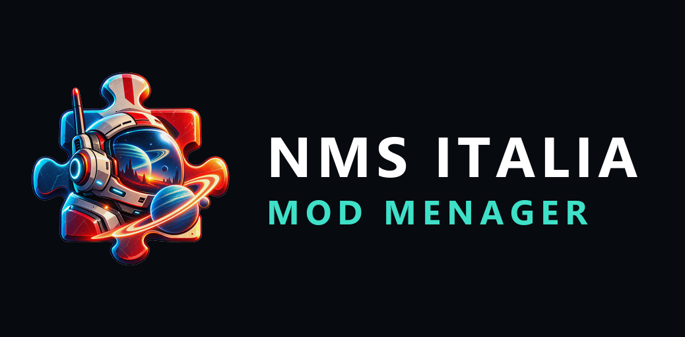

Gestisce le mod, trova i conflitti reali e spiega cosa non va. In italiano.
Progetto community non ufficiale. Non affiliato né approvato da Hello Games.
Sviluppato con l'aiuto dell'intelligenza artificiale, in modo dichiarato.
Un gestore di mod per No Man's Sky, pensato per la community italiana. L'obiettivo non è copiare file in una cartella: è capire lo stato del modding e spiegarlo.
Deve rispondere a domande come queste, in italiano e con il motivo:
.MBIN senza MBINCompiler della versione giusta. Il formato binario viene ricostruito dalla comunità a ogni aggiornamento del gioco, e riscriverlo qui significherebbe duplicare un lavoro mantenuto altrove.Le funzioni non ancora realizzate sono dichiarate dentro il programma con la fase in cui arriveranno. Nessun pulsante che finge di funzionare.
Non serve installare nulla: il pacchetto contiene già tutto, runtime compreso. Non serve nemmeno una connessione a Internet.
Va bene ovunque: sul Desktop, in C:\Programmi, su un'altra unità.
Non scompattarlo dentro la cartella di No Man's Sky.
Doppio clic su NMSItalia.ModMenager.App.exe. È l'unico file
.exe nella cartella: non c'è modo di sbagliare.
Al primo avvio
Windows mostrerà "Windows ha protetto il PC". Succede per qualsiasi programma non firmato digitalmente. Clicca "Ulteriori informazioni", poi "Esegui comunque". Non è un errore e non significa che il file sia danneggiato.
Guida completa: requisiti, primo avvio, problemi comuni e disinstallazione →
Le guide in circolazione sono in gran parte obsolete. Da Worlds Part II (No Man's Sky 5.50 e successivi) Hello Games ha riscritto il sistema di modding.
| Prima | Adesso | |
|---|---|---|
| Dove vanno | PCBANKS\MODS | GAMEDATA\MODS |
| Formato | un file .pak per mod | una cartella per mod |
| Come si applicano | sostituiscono file interi | .MBIN sostituisce, .EXML modifica solo le proprietà dichiarate |
Conseguenze pratiche:
PCBANKS\MODS non verrà caricata;.pak probabilmente non funziona;.MXML non funziona (unica eccezione LocTable.MXML);Il pacchetto è autosufficiente: non richiede l'installazione di .NET. Circa 49 MB compressi, la maggior parte dei quali è il runtime incluso.
Il progetto nasce e vive nel server NMS Italia su Discord: supporto, segnalazioni e aggiornamenti.
https://discord.gg/KB2NbjCW6hProprietaria — tutti i diritti riservati. L'uso è gratuito. Non sono consentiti la modifica, la ridistribuzione, la vendita né l'ingegneria inversa.
Il codice sorgente non è distribuito e non è pubblico: il programma è disponibile solo in forma compilata.
"No Man's Sky" e "Hello Games" sono marchi dei rispettivi titolari, citati unicamente in forma descrittiva. Le librerie di terze parti e le loro licenze sono elencate in THIRD_PARTY_NOTICES.md.